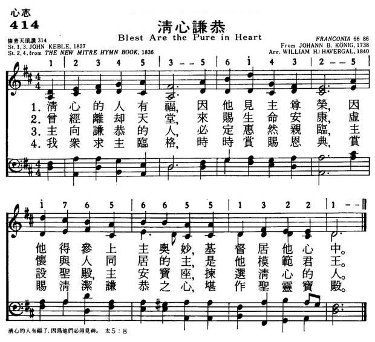
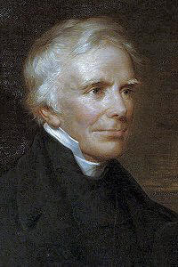

|
|
|
|
1 Blest are the pure in heart, 2 The Lord, who left the heavens 3 Still to the lowly soul 4 Lord, we thy presence seek; |
414清心谦恭
1.清心的人有福，因他见主尊荣，
因他得参上主奥妙，基督居他心中。 2.曾经离却天堂，来赐生命安康， 虚怀与人同居的主，是他模范君王。 3.主向谦恭的人，必定惠然亲临， 主设圣殿，主安宝座，拣选清心的人。 4.我众求主临格，时时赏赐恩典， 赏赐清洁谦恭之心，堪作圣灵宝殿 |
|
https://www.mred365.cn/szxg/7417.html
 https://hymnary.org/hymn/HPEC1940/page/490
|
|
|
|
|


https://www.youtube.com/watch?v=-2cVQ2sd_os -
https://www.youtube.com/watch?v=a0JzGxczZ00&t=38s
| Text: | Blest are the pure in heart |
| Author: | John Keble |
| Tune: | FRANCONIA |
| Arranger: | W. H. Havergal |
| Composer: | Johann B. Koenig |
| Short Name: | John Keble |
| Full Name: | Keble, John, 1792-1866 |
| Birth Year: | 1792 |
| Death Year: | 1866 |
Keble, John,

M.A., was born at Fairford, in Gloucestershire, on St. Mark's Day, 1792. His father was Vicar of Coln St. Aldwin's, about three miles distant, but lived at Fairford in a house of his own, where he educated entirely his two sons, John and Thomas, up to the time of their entrance at Oxford. In 1806 John Keble won a Scholarship at Corpus Christi College, and in 1810 a Double First Class, a distinction which up to that time had been gained by no one except Sir Robert Peel. In 1811 he was elected a Fellow of Oriel, a very great honour, especially for a boy under 19 years of age; and in 1811 he won the University Prizes both for the English and Latin Essays. It is somewhat remarkable that amid this brilliantly successful career, one competition in which the future poet was unsuccessful was that for English verse, in which he was defeated by Mr. Rolleston. After his election at Oriel, he resided in College, and engaged in private tuition. At the close of 1813 he was appointed Examining Master in the Schools, and was an exceedingly popular and efficient examiner. On Trinity Sunday, 1815, he was ordained Deacon, and in 1816 Priest, by the Bishop of Oxford, and became Curate of East Leach and Burthorpe, though he still continued to reside at Oxford. In 1818 he was appointed College Tutor at Oriel, which office he retained until 1823. On the death of his mother in the same year, he left Oxford, and returned to live with his father and two surviving sisters at Fairford. In addition to East Leach and Burthorpe, he also accepted the Curacy of Southrop, and the two brothers, John and Thomas, undertook the duties between them, at the same time helping their father at Coln. It should be added, as an apology for Keble thus becoming a sort of pluralist among "the inferior clergy," that the population of all his little cures did not exceed 1000, nor the income £100 a year. In 1824 came the only offer of a dignity in the Church, and that a very humble one, which he ever received. The newly-appointed Bishop of Barbadoes (Coleridge) wished Keble to go out with him as Archdeacon, and but for his father's delicate state of health, he would probably have accepted the offer. In 1825 he became Curate of Hursley, on the recommendation of his old pupil, Sir William Heathcote; but in 1826, on the death of his sister, Mary Ann, he returned to Fairford, feeling that he ought not to separate himself from his father and only surviving sister. He supplied his father's place at Coln entirely. 1827 was memorable for the publication of The Christian Year, and 1828 for the election to the Provostship of Oriel, which his friends, rather than himself, seem to have been anxious to secure for him. In 1829 the living of Hursley was offered to him by Sir William Heathcote, but declined on the ground that he could not leave his father. In 1830 he published his admirable edition of Hooker's Works. In 1831 the Bishop of Exeter (Dr. Philpotts) offered him the valuable living of Paignton, but it was declined for the same reason that Hursley had been declined. In the same year he was also elected to the Poetry Professorship at Oxford. His Praelectiones in that capacity were much admired. In 1833 he preached his famous Assize Sermon at Oxford, which is said by Dr. Newman to have given the first start to the Oxford Movement. Very soon after the publication of this sermon the Tracts for the Times began to be issued. Of these Tracts Keble wrote Nos. 4, 13, 40, and 89. In 1835 his father died, and Keble and his sister retired from Fairford to Coln. In the same year he married Miss Clarke and the Vicarage of Hursley, again becoming vacant, was again offered to him by Sir W. Heathcote, and as the reason for his previous refusal of it no longer existed, he accepted the offer, and in 1836 settled at Hursley for the remainder of his life. That life was simply the life of a devoted and indefatigable parish priest, varied by intellectual pursuits. In 1864 his health began to give way, and on March 29, 1866, he passed away, his dearly loved wife only surviving him six weeks. Both are buried, side by side, in Hursley churchyard.
In his country vicarage he was not idle with his pen. In 1839 he published his Metrical Version of the Psalms. The year before, he began to edit, in conjunction with Drs. Pusey and Newman, the Library of the Fathers. In 1846 he published the Lyra Innocentium, and in 1847 a volume of Academical and Occasional Sermons. His pen then seems to have rested for nearly ten years, when the agitation about the Divorce Bill called forth from him in 1851 an essay entitled, An Argument for not proceeding immediately to repeal the Laws which treat the Nuptial Bond as Indissoluble; and in the same year the decision of Archbishop Sumner in the Denison case elicited another essay, the full title of which is The Worship of Our Lord and Saviour in the Sacrament of the Holy Communion, but which is shortly entitled, Eucharistical Adoration. In 1863 he published his last work, The Life of Bishop Wilson (of Sodor and Man). This cost him more pains than anything he wrote, but it was essentially a labour of love.
In the popular sense of
the word "hymn," Keble can scarcely be called a hymnwriter at all. Very many
of his verses have found their way into popular collections of Hymns for
Public Worship, but these are mostly centos. Often they are violently
detached from their context in a way which seriously damages their
significance. Two glaring instances of this occur in the Morning and Evening
hymns. In the former the verse "Only, O Lord, in Thy dear love, Fit us for
perfect rest above," loses half its meaning when the preceding verse, ending
"The secret this of rest below," is excised, as it generally is in
collections for public worship, and the same may be said of that most
familiar of all Keble's lines, "Sun of my soul, thou Saviour dear," which
has of course especial reference to the preceding verse, "'Tis gone, that
bright and orbed blaze," &c. The Lyra Innocentium has
furnished but few verses which have been adopted into hymn collections; the Psalter has
been more fortunate, but the translations from the Latin are almost unknown.
Taking, however, the word "hymn" in the wider sense in which Dr. Johnson
defines it, as "a song of adoration to some superior being," Keble stands in
the very first rank of hymnwriters. His uneventful life was the very ideal
life for such a poet as Keble was, but not the sort of life which would be
best adapted to train a popular hymnwriter. The Christian
Year and the Lyra Innocentium reflect
in a remarkable degree the surroundings of the writer. They are essentially
the works of a refined and cultured mind, and require a refined and cultured
mind to enter into their spirit. Keble, all his life long, and never more
than in the earlier portion of it, before he wrote, and when he was writing The
Christian Year, breathed an atmosphere of culture and refinement. He
had imbibed neither the good nor the evil which the training of a public or
even of a private, school brings. It was not even the ordinary home
education which he had received. He had been trained, up to the very time of
his going to college, by his father, who was clearly a man of culture and
refinement, and had been himself successively Scholar and Fellow of Corpus.
When he went to Oxford, he can scarcely be said to have entered into the
whirl of university life. The Corpus of those days has been admirably
described by Keble's own biographer, Sir John Coleridge, and by Dean Stanley
in his Life of Dr. Arnold; and the impression which
the two vivid pictures leave upon the mind is that of a home circle, on
rather a large scale, composed of about twenty youths, all more or less
scholarly and refined, and some of them clearly destined to become men of
mark. When he removed across the road to Oriel, he found himself in the
midst of a still more distinguished band. Whether at home or at college he
had never come into contact with anything rude or coarse. And his poetry is
just what one would expect from such a career. Exquisitely delicate and
refined thoughts, expressed in the most delicate and refined language, are
characteristic of it all. Even the occasional roughnesses of versification
may not be altogether unconnected with the absence of a public school
education, when public schools laid excessive stress upon the form of
composition, especially in verse. The Christian Year again
bears traces of the life which the writer led, in a clerical atmosphere,
just at the eve of a great Church Revival, "cujus pars magna fuit." “You
know," he writes to a friend, “the C. Y. (as far as I
remember it) everywhere supposes the Church to be in a state of decay."
Still more obviously is this the case in regard to the Lyra
Innocentium. It was being composed during the time when the writer was
stricken by what he always seems to have regarded as the great sorrow of his
life. Not the death of his nearest relations—-and he had several trials of
this kind—-not the greatest of his own personal troubles dealt to him so
severe a blow as the secession of J. H. Newman to the Church of Rome. The
whole circumstances of the fierce controversy connected with the Tract movement
troubled and unsettled him; and one can well understand with what a sense of
relief he turned to write, not for, but about, little children, a most
important distinction, which has too often been unnoticed. If the Lyra had
been written for children it would have been an almost ludicrous failure,
for the obscurity which has been frequently complained of in The
Christian Year, is still more conspicuous in the latter work. The title
is somewhat misleading, and has caused it to be regarded as a suitable
gift-book for the young, who are quite incapable of appreciating it. For the Lyra is
written in a deeper tone, and expresses the more matured convictions of the
author; and though it is a far less successful achievement as a whole, it
rises in places to a higher strain of poetry than The
Christian Year does.
Another marked feature of Keble's poetry is to a great extent traceable to
his early life, viz. the wonderful accuracy and vividness of his
descriptions of natural scenery. The ordinary schoolboy or undergraduate
cares little for natural scenery. The country is to him a mere playing
field. But Keble's training led him to love the country for its own sake.
Hence, as Dean Stanley remarks, “Oxford, Bagley Wood, and the neighbourhood
of Hursley might be traced through hundreds of lines, both in The
Christian Year and the Lyra Innocentium.”
The same writer testifies, with an authority which no other Englishman could
claim, to "the exactness of the descriptions of Palestine, which he [Keble]
had never visited.” And may not this remarkable fact be also traced to some
extent to his early training? Brought up under the immediate supervision of
a pious father, whom he venerated and loved dearly, he had been encouraged
to study intelligently his Bible in a way in which a boy differently
educated was not likely to do. Hence, as Sir John Coleridge remarks,
"The Christian Year is so wonderfully scriptural. Keble's mind was, by long, patient and affectionate study of Scripture, so imbued with it that its language, its train of thought, its mode of reasoning, seems to flow out into his poetry, almost, one should think, unconsciously to himself."
To this may we not add
that the same intimate knowledge of the Bible had rendered the memory of the
Holy Land so familiar to him that he was able to describe it as accurately
as if he had seen it? One other early influence of Keble's life upon his
poetry must be noticed. Circumstances brought him into contact with the
"Lake poets." The near relation of one of the greatest of them had been his
college friend, and John Coleridge introduced him to the writings not only
of his uncle, S. T. Coleridge, but also of Wordsworth, to whom he dedicated
his Praelectiones, and whose poetry and personal
character he admired enthusiastically. To the same college friend he was
indebted for an introduction to Southey, whom he found to be "a noble and
delightful character," and there is no doubt that the writings of these
three great men, but especially Wordsworth, had very much to do with the
formation of Keble's own mind as a poet. It has been remarked that in
Keble's later life his poetical genius seemed to have, to a great extent,
forsaken him; and that the Miscellaneous Poems do
not show many traces of the spirit which animated The
Christian Year and the Lyra Innocentium.
Perhaps one reason for this change may be found in the increased interest
"which Keble took in public questions which were not conducive to the calm,
introspective state of mind so necessary to the production of good poetry.
The poet should live in a world of his own, not in a world perpetually
wrangling about University Reform, about Courts of Final Appeal, about
Marriage with Deceased Wife's Sister, and other like matters into which
Keble, in his later years, threw himself—heart and soul.
It is not needful to say much about Keble's other poetical works, The Psalter was
not a success, and Keble did not expect it to be. It was undertaken," he
tells us, "in the first instance with a serious apprehension, which has
since grown into a full conviction, that the thing attempted is, strictly
speaking, impossible." At the same time, if Keble did not achieve what he
owned to be impossible, he produced a version which has the rare merit of
never offending against good taste; one which in every line reflects the
mind of the cultured and elegant scholar, who had been used to the work of
translating from other languages into English. Hymnal compilers have
hitherto strangely neglected this volume; but it is a volume worth the
attention of the hymn compiler of the future. There is scarcely a verse in
it which would do discredit to any hymnbook; while there are parts which
would be an acquisition to any collection. His translations from the Latin
have not commended themselves to hymnal compilers. Some of his detached
hymns have been more popular. But it is after all as writer of The
Christian Year that Keble has established his claim to be
reckoned among the immortals. It would be hardly too much to say that what
the Prayer Book is in prose, The Christian Year is
in poetry. They never pall upon one; they realise Keble's own exquisite
simile:—
"As for some dear familiar strain
Untired we ask, and ask again;
Ever in its melodious store
Finding a spell unheard before."
And it would hardly be too bold to prophesy that The Christian Year will live as long as the Prayer Book, whose spirit Keble had so thoroughly imbibed, and whose "soothing influence" it was his especial object to illustrate and commend. [Rev. John H. 0verton, D.D.]
Keble's hymns, poetical
pieces, and translations appeared in the following works :—
(1.) The Christian Year: Thoughts in Verse for the Sundays
and Holy days Throughout the Year. Oxford: John Henry Parker, 1827.
Preface dated "May 30th, 1827." The last poem, that on the “Commination," is
dated March 9, 1827. The poems on the "Forms of Prayer to be used at Sea,"
"Gunpowder Treason," "King Charles the Martyr," "The Restoration of the
Royal Family," "The Accession," and "Ordination," were added to the 4th
edition, 1828. The Messrs. Parker have pub. a large number of editions to
date, including a facsimile reprint of the first edition, and an edition
with the addition of the dates of composition of each poem. A facsimile of
Keble's manuscript as it existed in 1822 was also lithographed in 1882, by
Eliot Stock, but its publication was suppressed by a legal injunction, and
only a few copies came into the hands of the public. Since the expiration of
the first copyright other publishers have issued the work in various forms.
(2.) Contributions to the British Magazine, which were
included in Lyra Apostolica, 1836, with the signature
of "γ."
(3.) The Psalter or Psalms of David; In English Verse; By a
Member of the University of Oxford. Adapted for the most part, to Tunes in
Common Use; and dedicated by permission to the Lord Bishop of Oxford. .
. . Oxford, John Henry Parker: J. G. & F. Rivington, London, MDCCCXXXIX.
Preface dated “Oxford, May 29, 1839."
(4.) The Child's Christian Year: Hymns for every Sunday and
Holy-Day. Compiled for the use of Parochial Schools. Oxford: John Henry
Parker, 1841. This was compiled by Mrs. Yonge. Keble wrote the Preface,
dated “Hursley, Nov. 6, 1841," and signed it “J. K." To it he contributed
the four poems noted below.
(5.) Lyra Innocentium: Thoughts in Verse on Christian
Children, their Ways and their Privileges . . . Oxford:
John Henry Parker : F. & J. Rivington, London, 1846. The Metrical Address
(in place of Preface) “To all Friendly Readers," is dated "Feb. 8, 1846."
(6.) Lays of the Sanctuary, and otter Poems. Compiled and
Edited by G. Stevenson de M. Rutherford... London: Hamilton, Adams &
Co., 1859. This was a volume of poems published on behalf of Mrs. Elizabeth
Good. To it Keble contributed the three pieces noted below.
(7.) The Salisbury Hymn-Book 1857. Edited
by Earl Nelson. To this be contributed a few hymns, some translations from
the Latin, and some rewritten forms of well-known hymns, as "Guide me, 0
Thou great Jehovah," &c.
(8.) Miscellaneous Poems by the. Rev. J. Keble, M.A., Vicar
of Hursley. Oxford and London: Parker & Co., 1869. The excellent
Preface to this posthumous work is dated "Chester, Feb. 22, 1869," and is
signed "G.M," i.e. by George Moberly, late Bishop of Salisbury. This volume
contains Keble's Ode written for the Installation of the Duke of Wellington
as Chancellor of the University of Oxford, in 1834, his poems from the Lyra
Apostolica, his hymns named above, his translations from the Latin, and
other pieces not published in his works.
The most important centos from The Christian Year, which are in common use as hymns, and also the hymns contributed to the Salisbury Hymn Book, 1857, are annotated in full under the first lines of the original poems. The translations from the Latin and Greek are given under the first lines of the originals. There are also several of his more important pieces noted in the body of this work. Those that …have no special history, are the following (the dates given being those of the composition of each piece):—
Notes
Bless'd are
the pure in heart. J. Keble. [Purification.] This
poem, in 17 stanzas of 4 lines, is dated "Oct. 10, 1819." It was first
published in his Christian Year, 1827. As a whole
it is not in common use. The following centos; some of which are found
in numerous collections, have been compiled therefrom:—
1. In J. Bickersteth's Psalms & Hymns, 1832, No.
449, we have stanzas i. and xvii. This was repeated in Elliott's Psalms
& Hymns, 1835, No. 258, as "Blest are the pure," &c. Although it
has fallen out of use in Great Britain, it is still given in a few
American collections, as the American Methodist Episcopal Hymns,
1849; The Evangelical Hymnal, N. Y., 1880.
2. In his Mitre Hymn Book, 1836, W. J. Hall
published a cento, as No. 249, which was composed of two stanzas from
this poem, and two that were new. By whom this cento was arranged, by
Hall, or his collaborator, E. Osier, is not known, as the H. MSS. simply
say "Keble."
In Murray's Hymnal, 1852, No. 122, this cento was
repeated with slight alterations, and the addition of a doxology. This
text, sometimes with, and again without a doxology, has been adopted by
most of the leading hymnals in Great Britain, and a few in America,
including Hymns Ancient & Modern; the Hymnary; Church
Hymns; the H. Companion; Thring;
the Baptist Hymnal; the American Sabbath
Hymn Book, N. Y., 1858, and others. In a note to this cento, No.
141, in the 1st edition of Hymns Ancient & Modern,
Mr. Biggs, in his Annotated Hymns Ancient & Modern,
quotes these words from Keble: "Hymn No. 141 is materially altered; not,
however, without asking the writer's leave, Rev. J. Keble." Whether this
leave was given to Hall, in the first instance, in 1836, or to Mr.
Murray on adopting Hall's text in 1852, cannot now be determined.
3. In several American collections, Hall's cento is repeated with the
omission of stanza ii. These include Songs for the
Sanctuary, N. Y., 1865.
4. In the Hymns for Christian Seasons, Gainsburgh,
2nd edition, 1854, the cento is, stanzas i.-iv. are Keble's stanzas i.,
xii., xiv. and xvii. very much altered, and v. Hall, stanza iv.
5. In Alford's Year of Praise, 1867, No. 251, the
cento is Keble, stanzas i., ii., iii., xv., and xvii.
6. In Nicholson's Appendix Hymnal, 1866, stanzas
iv., viii.-x. are given as No. 19, beginning, "Give ear, ye kings, bow
down."
In addition to these, other arrangements are sometimes found, but are
not of sufficient importance to be enumerated.
-- Excerpts from John Julian, Dictionary of Hymnology (1907)
Read LessTune Information
| Title: | FRANCONIA (König) |
| Composer (attributed to): | J. B. König |
| Composer (attributed to): | J. G. Ebeling |
| Adapter: | William Havergal |
| Meter: | 6.6.8.6 |
| Incipit: | 12345 35614 32517 |
| Key: | E♭ Major |
| Source: | König's Chorale Book, 1738 |
| Copyright: | Public Domain |
| Short Name: | Johann Balthasar König |
| Full Name: | König, Johann Balthasar, 1691-1758 |
| Birth Year: | 1691 |
| Death Year: | 1758 |
Johann Balthasar König; b. 1691, Waltershausen, near Gotha; d. 1758, Frankfort
Evangelical Lutheran Hymnal, 1908